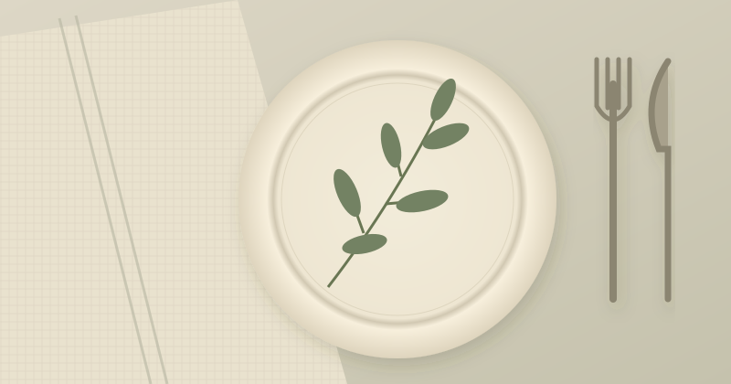

UNSER KOCHBUCH · DAS REGISTER
Inhaltsverzeichnis
Alle Lieblingsrezepte, Kapitel für Kapitel. Such dir etwas Schönes aus und schlage direkt die passende Seite auf.

AUFSCHLAGEN & LOSKOCHEN
Noch keine Rezepte. Hier wächst unsere Sammlung.